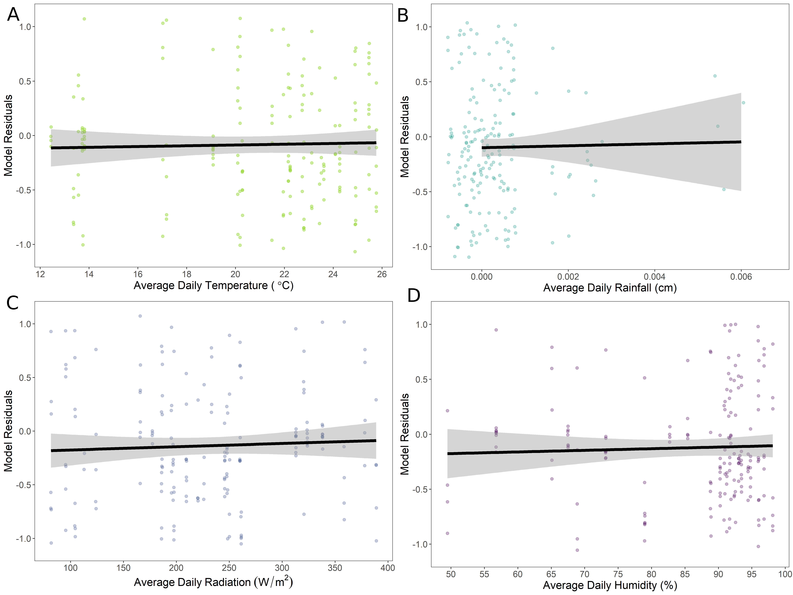

Monarch Butterfly Infection Transmission
Abbreviated methods
Experimental design
Honey bee workers complete specific tasks based on the age of the worker. Beekeepers often provide pollen supplement patties (PSPs) to provide nutrition during periods of pollen dearth. In this experiment, we were interested in whether nurse bees (that normally handle pollen) interact with PSPs or whether workers of other ages do. This experiment was conducted by Emily Noordyke for her master's work, advised by James D. Ellis.
To answer the question, bees were marked with non-toxic paint at eclosion. Two response variables were collected. In the first, proportion of bees with marked dye in guts, 20 bees per day were dissected and two observers identified whether dye was present in the sample. Only samples in which the two observers agreed were included in our statistical analysis. In the second, hives were opened daily and the number of marked bees standing on or interacting with PSPs was recorded. There were 4 treatments, (1) six colonies received a dyed PSP, (2) three colonies received undyed PSP (negative control), (3) three colonies received fondant mixed with dye (positive control), and (4) three colonies received model clay mixed with dye (consumption control).
Data analysis
Model selection
We investigated the presence (1) of dye in worker guts and (2) of workers on PSPs by constructing generalized linear mixed effects models in R (version 1.4.3). We then utilized Akaike’s Information Criterion (AICc) (Akaike 1998; Grueber et al. 2011; Symonds and Moussalli 2011) to perform model selection and evaluate our candidate models for each experiment. This exploratory method is an alternative to traditional null-hypothesis significance testing and thus does not generate p-values (Grueber et al. 2011; Symonds and Moussalli 2011; Tredennick et al. 2021). We calculated AICc scores, change in AICc scores (∆i=AICci − minimum AICc), and AICc weight with MuMIn::model.sel (Bartoń 2022). We considered models with smaller AICc values and fewer predictor variables to be more parsimonious (Burnham and Anderson 2004). We averaged our top models using MuMIn::model_avg (Bartoń 2022) and then selected the full average, or zero method, to account for high model selection uncertainty (Grueber et al. 2011; Symonds and Moussalli 2011). We examined estimate sizes from the averaged model to identify the important variables for our system and select the most parsimonious model for the rest of the analysis. With the most parsimonious model for each experiment, Estimated Marginal Means (EMMs) and 95% confidence intervals of the response variables were calculated across worker age using emmeans::emmeans (Lenth 2022). We visually assessed various model assumptions for our most parsimonious models using simulated residuals in DHARMa:: simulateResiduals (Hartig 2022).
Environmental covariates
Weather data was collected from the University of Florida IFAS Florida Automated Weather Network (FAWN). Hourly measurements were averaged for each day of the experiment. We selected temperature at 60 cm (C), rainfall (cm), radiation (W/m^2), and humidity (%). We evaluated the effect of the environmental variables on each response variable in our system by visually assessing a plot of each unscaled environmental variable against the residuals of a GLMM containing all components of the corresponding full model, minus the environmental variable being evaluated. We examined the direction and steepness of a slope from a generalized linear model that represented the relationship between each environmental variable and our system. Slopes nearly or equal to zero indicated a negligible effect of the environmental variable. We elected to assess each environmental variable against the residuals of our selected models instead of raw means of each response variable to account for the various terms and random effects in our models, similar to how the averaged model estimates were calculated.
Dye presence in bee guts
To examine dye presence in bee guts across worker age, we constructed models with a binomial distribution (1 = dye present, 0 = dye absent) and dye presence as the response variable. We selected worker age as linear and quadratic fixed effect predictor variables in our full model. We included the quadratic term based on our prediction that dye presence would peak at days five to ten. Additionally, we included the four environmental variables of interest as fixed effect covariates. We summarized the average value of each variable for the 23 hours preceding sampling (12:00 day n-1 – 11:00 day n). To account for time-dependent colony effects, we adopted a colony random effect with a first-order autoregressive (AR1) correlation structure. An AR1 correlation structure accounts for higher correlation in time points closer together (Shan et al. 2020). From our full model, we created subsequent models with all possible combinations of environmental covariates (Symonds and Moussalli 2011) and a variety of null models with (1) a colony random effect without AR1 correlation structure, (2) only weather variables, (3) no quadratic age fixed effect predictor variable, and (4) no predictor variables (response ~ 1). All 20 models were constructed with glmmTMB::glmmTMB (Brooks et al. 2017) and underwent model selection with AICc (Table 1). We initially examined all models within ∆i < 6 (Richards 2005). However, 15 of our 20 models were within ∆i < 6 and our goal of model selection was not met. Thus, we applied a more restrictive criteria of ∆i < 2 to consider and averaged our top models (Symonds and Moussalli 2011).

Figure 1: Guts of dyed bees (left) compared to undyed bee guts (right).
Observations of marked bees on PSPs
To examine the presence of marked bees on PSPs across worker age, we constructed models with a negative binomial or Poisson distribution (Table 2) and counts of marked workers on PSPs as our response variable. We combined observations from the AP23 dyed and undyed (negative control) treatment groups, as we hypothesized that the presence of dye would not affect the number of marked bees contacting PSPs. Additionally, any differences between colonies were accounted for in a colony random effect with an AR1 correlation structure. We utilized an offset as a fixed effect to account for the changing total population of marked bees in each colony, due to background mortality and the removal of marked bees each day for the dye presence in bee guts experiment (Reitan and Nielsen 2016). The offset was employed as the log(total number of bees in each colony), which predicts the outcome variable as the rate of log(number of bees on PSPs) per total number of bees in the colony (Hutchinson and Holtman 2005). The total number of bees in each colony was calculated using the following formula: [number of bees at the start of the day (800 for day 1) – number of bees removed (20 bees per day, unless less than 20 bees were available) – background mortality of the number of bees left after removal each day]. The background mortality was calculated as the median rate of 3.7% (ESFA 2020), unless total bee counts were reduced below zero, in which case we reduced the background mortality rate by 0.1% until total bees were above zero at the end of the sampling period.
We included the four environmental variables of interest as fixed effect covariates in our full model to examine potential effects of environmental conditions on worker interaction with PSPs. We summarized the average value of each covariate for the period of sunrise to average observation time (7:00 – 11:00). From our full model, we created subsequent candidate models with all possible combinations of environmental covariates (Symonds and Moussalli 2011) and a variety of null models with (1) a colony random effect without AR1 correlation structure, (2) only weather variables, (3) no quadratic age fixed effect predictor variable, (4) no predictor variables (response ~ 1), and (5) the offset fixed effect removed. All 21 models were constructed with glmmTMB::glmmTMB (Brooks et al. 2017) and underwent model selection with AICc (Table 2). We averaged all models within ∆i < 6 (Richards 2005).

Figure 2: Honey bees consuming blue dyed patties in colony.
Results
Dye presence in bee guts
Of our 20 constructed models, 15 were within ∆i < 6 (AICc = 3343.0 – 3349.0) and 3 were within ∆i < 2 (AICc = 3343.0 – 3344.9). The averaged model revealed worker age as both a linear (estimate ± SE = 0.365 ± 0.055) and quadratic term (-0.009 ± 0.002) were important in our system. Temperature (scaled estimate ± SE = 0.213 ± 0.086) and humidity (-0.248 ± 0.099) were included in all models within ∆i < 2, but the slopes when plotted against model residuals were nearly zero (Figure 3A and 3D). Rainfall (0.023 ± 0.044) and radiation (-0.007 ± 0.048) were not included in all models within ∆i < 2 and the slopes when plotted against model residuals were approximately zero (Figure 3B and 3C). We selected model 1 as our most parsimonious model for the completion of our analysis.
{kind=link}
Figure 3: Evaluating the impact of average daily (A) temperature, (B) rainfall, (C) radiation, and (D) humidity on dye presence from pollen substitute patty consumption throughout worker age. Each environmental variable was plotted against the residuals from a generalized linear mixed effects model with a binomial distribution, age as linear and quadratic fixed effect predictor variables, a colony random effect with a first-order autoregressive (AR1) correlation structure, and the three remaining environmental variables. The continuous black lines with gray shading represent the relationship between the environmental variables and the age model. The lines and 95% confidence intervals were calculated from a generalized linear model. The slopes are nearly zero for all four environmental variables, indicating they have minimal to no effect on dye presence across worker age.
As worker age increased, the proportion of dye presence from PSP consumption gradually increased until peaking at days 19 (EMM= 0.640, 95% CI = 0.548 - 0.723) and 20 (EMM= 0.640, 95% CI = 0.549 - 0.722; Figure 4). After day 20, the proportion of dye presence gradually decreased until the end of sampling at 29 days old (Figure 4). When examining the proportion of dye presence across worker age for each of the six colonies, we found variation in the amount of dyed PSP consumed and the shape of the trend over time (VC=0.302; Figure 4). In our most parsimonious model, temporal autocorrelation was strong (AR1 correlation coefficient = 0.90). All model assumptions were satisfied through visual inspection of the simulated residuals.
.png)
Figure 4: Proportion of dye presence from pollen substitute patty consumption as worker age increases. The continuous black line with gray shading represents the estimated marginal means and their 95% confidence intervals from a generalized linear mixed effects model (Table 1, Model 1) with a binomial distribution of all colonies. Estimated curves for each of the six colonies are represented by the multicolor dashed lines. On average, dye presence peaks at 19-20 days of age. The proportion and timing of dye presence varies by colony.
Observations of marked bees on PSPs
Of our 21 constructed models, 4 were within ∆i < 6 (AICc = 695.2 – 699.8). The averaged model revealed worker age as both a linear (estimate ± SE = 0.487 ± 0.064) and quadratic term (-0.013 ± 0.002) were important in our system. Temperature (scaled estimate ± SE = 0.411 ± 0.120) and rainfall (0.324 ± 0.108) were included in all models within ∆i < 6, but the slopes when plotted against model residuals were nearly zero (Figure 5A and 5B). Radiation (0.239 ± 0.161) and humidity (0.092 ± 0.135) were not included in all models within ∆i < 2 and the slopes when plotted against model residuals were approximately zero (Figure 5C and 5D). We selected model 3 as our most parsimonious model for the completion of our analysis.
{kind=link}
Figure 5: Evaluating the impact of average daily (A) temperature, (B) rainfall, (C) radiation, and (D) humidity on number of marked bees observed on pollen substitute patties (PSPs) throughout worker age. Each environmental variable was plotted against the residuals from a generalized linear mixed effects model with a negative binomial distribution, age as linear and quadratic fixed effect predictor variables, an offset variable (log total number of bees), a colony random effect with a first-order autoregressive (AR1) correlation structure, and the three remaining environmental variables. The continuous black lines with gray shading represent the relationship between the environmental variables and the age model. The lines and 95% confidence intervals were calculated from a generalized linear model. The slopes are nearly zero for all four environmental variables, indicating they have minimal to no effect on marked worker presence on PSPs across worker age.
As worker age increased, the number of marked bees observed on PSP gradually increased until peaking at day 19 (EMM= 3.6773, 95% CI = 2.659 – 5.0917). After day 19, the proportion of dye presence gradually decreased until the end of sampling at 29 days old (Figure 6). When examining the number of marked bees observed on PSPs across worker age for each of the nine colonies, we found variation in the amount of dyed PSP consumed and the shape of the trend over time (VC=0.282; Figure 6). In our final most parsimonious model, temporal autocorrelation was strong (AR1 correlation coefficient = 0.88). All model assumptions were satisfied through visual inspection of the simulated residuals.

Figure 6: (A) The number of marked bees observed on pollen substitute patties (PSPs) as worker age increases. The continuous black line with gray shading represents the estimated marginal means and their 95% confidence intervals from a generalized linear mixed effects model (Table 2, Model 1) with a negative binomial distribution of all colonies. On average, dye presence peaks at 19 days of age. (B) The proportion of marked bees observed on PSPs of the estimated total number of marked bees remaining in each colony across worker age, which mimics the penalty of the offset in our generalized linear mixed effects models. The nine colonies are represented by the multicolor dashed lines. The proportion and timing of dye presence varies by colony.
References
Akaike, H. 1998. Information Theory and an Extension of the Maximum Likelihood Principle, pp. 199–213. In Parzen, E., Tanabe, K., Kitagawa, G. (eds.), Selected Papers of Hirotugu Akaike, Springer Series in Statistics. Springer New York, New York, NY.
Brooks, M. E., K. Kristensen, K. J. van Benthem, A. Magnusson, C. W. Berg, A. Nielsen, H. J. Skaug, M. Maechler and B. M. Bolker. 2017. glmmTMB Balances Speed and Flexibility Among Packages for Zero-inflated Generalized Linear Mixed Modeling. The R Journal, 9(2), 378-400.
Burnham, K. P., and D. R. Anderson. 2004. Multimodel Inference: Understanding AIC and BIC in Model Selection. Sociological Methods & Research. 33: 261–304.
Clarke, D., and D. Robert. 2018. Predictive modelling of honey bee foraging activity using local weather conditions. Apidologie. 49: 386–396.
Crailsheim, K. 1990. The protein balance of the honey bee worker. Apidologie. 21: 417–429.
European Food Safety Authority (EFSA), Ippolito, A., Aguila, M. D., Aiassa, E., Guajardo, I. M., Neri, F. M., ... & Szentes, C. 2020. Review of the evidence on bee background mortality (Vol. 17, No. 7, p. 1880E).
Hartig, F. 2022. DHARMa: Residual Diagnostics for Hierarchical (Multi-Level/Mixed) Regression Models. R package version 0.4.5.
Hutchinson, M. K., & Holtman, M. C. 2005. Analysis of count data using poisson regression. Research in nursing & health, 28(5), 408-418.
Grueber, C. E., S. Nakagawa, R. J. Laws, and I. G. Jamieson. 2011. Multimodel inference in ecology and evolution: challenges and solutions. Journal of Evolutionary Biology. 24: 699–711.
Lenth, R. V. 2022. emmeans: Estimated Marginal Means, aka Least-Squares Means. R package version 1.7.2. https://CRAN.R-project.org/package=emmeans
Noordyke, E. R., E. v. Santen, J. D. Ellis. 2021. Tracing the Fate of Pollen Substitute Patties in Western Honey Bee (Hymenoptera: Apidae) Colonies. Journal of Economic Entomology. 114:4. 1421–1430.
Reitan, T., and A. Nielsen. 2016. Do Not Divide Count Data with Count Data; A Story from Pollination Ecology with Implications Beyond. PLOS ONE. 11: e0149129.
Richards, S. A. 2005. Testing ecological theory using the information-theoretic approach: examples and cautionary results. 86: 10.
Shan, G., H. Zhang, and T. Jiang. 2020. Correlation Coefficients for a Study with Repeated Measures. Comput Math Methods Med. 2020: 7398324.
Symonds, M. R. E., and A. Moussalli. 2011. A brief guide to model selection, multimodel inference and model averaging in behavioural ecology using Akaike’s information criterion. Behav Ecol Sociobiol. 65: 13–21.
Tredennick, A. T., G. Hooker, S. P. Ellner, and P. B. Adler. 2021. A practical guide to selecting models for exploration, inference, and prediction in ecology. Ecology. 102: e03336.
Wang, X., H. Liu, X. Li, Y. Song, L. Chen, and L. Jin. 2009. Correlations Between Environmental Factors and Wild Bee Behavior on Alfalfa (Medicago sativa) in Northwestern China. Environmental Entomology. 38: 1480–1484.